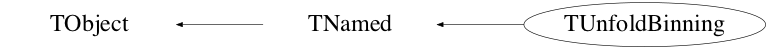

class TUnfoldBinning: public TNamed
TUnfoldBinning This class serves as a container of analysis bins analysis bins are specified by defining the axes of a distribution. It is also possible to have unconnected analysis bins without axis. Multiple TUnfoldBinning objects may be arranged in a tree, such that a full tree structure of histograms and bins is supported If you use this software, please consider the following citation S.Schmitt, JINST 7 (2012) T10003 [arXiv:1205.6201] More documentation and updates are available on http://www.desy.de/~sschmitt Functionality The class gives access to all analysis bins numbered in sequence. Such a sequence of bins may be stored in a 1-dimension histogram. Correlations between two TUnfoldBinning objects may be stored in a 2-dimensional histogram. This type of ordering is required for the TUnfold class. In addition, it is possible to have root histograms, using the axes as defined with the distributions. Underflow/overflow bins can be included or excluded when mapping bins on root histograms. In addition, it is possible to collapse one of more axes when going from a N-dimensional distribution to a root histogram.
Function Members (Methods)
public:
| TUnfoldBinning(const TUnfoldBinning&) | |
| TUnfoldBinning(const char* name = 0, Int_t nBins = 0, const char* binNames = 0) | |
| TUnfoldBinning(const TAxis& axis, Int_t includeUnderflow, Int_t includeOverflow) | |
| virtual | ~TUnfoldBinning() |
| void | TObject::AbstractMethod(const char* method) const |
| Bool_t | AddAxis(const TAxis& axis, Bool_t includeUnderflow, Bool_t includeOverflow) |
| Bool_t | AddAxis(const char* name, Int_t nBins, const Double_t* binBorders, Bool_t hasUnderflow, Bool_t hasOverflow) |
| Bool_t | AddAxis(const char* name, Int_t nBins, Double_t xMin, Double_t xMax, Bool_t hasUnderflow, Bool_t hasOverflow) |
| TUnfoldBinning* | AddBinning(TUnfoldBinning* binning) |
| TUnfoldBinning* | AddBinning(const char* name, Int_t nBins = 0, const char* binNames = 0) |
| virtual void | TObject::AppendPad(Option_t* option = "") |
| virtual void | TObject::Browse(TBrowser* b) |
| static TClass* | Class() |
| virtual const char* | TObject::ClassName() const |
| virtual void | TNamed::Clear(Option_t* option = "") |
| virtual TObject* | TNamed::Clone(const char* newname = "") const |
| virtual Int_t | TNamed::Compare(const TObject* obj) const |
| virtual void | TNamed::Copy(TObject& named) const |
| TH2D* | CreateErrorMatrixHistogram(const char* histogramName, Bool_t originalAxisBinning, Int_t** binMap = 0, const char* histogramTitle = 0, const char* axisSteering = 0) const |
| TH1* | CreateHistogram(const char* histogramName, Bool_t originalAxisBinning = kFALSE, Int_t** binMap = 0, const char* histogramTitle = 0, const char* axisSteering = 0) const |
| static TH2D* | CreateHistogramOfMigrations(TUnfoldBinning *const xAxis, TUnfoldBinning *const yAxis, char *const histogramName, Bool_t originalXAxisBinning = kFALSE, Bool_t originalYAxisBinning = kFALSE, char *const histogramTitle = 0) |
| void | DecodeAxisSteering(const char* axisSteering, const char* options, Int_t* isOptionGiven) const |
| virtual void | TObject::Delete(Option_t* option = "")MENU |
| virtual Int_t | TObject::DistancetoPrimitive(Int_t px, Int_t py) |
| virtual void | TObject::Draw(Option_t* option = "") |
| virtual void | TObject::DrawClass() constMENU |
| virtual TObject* | TObject::DrawClone(Option_t* option = "") constMENU |
| virtual void | TObject::Dump() constMENU |
| virtual void | TObject::Error(const char* method, const char* msgfmt) const |
| virtual void | TObject::Execute(const char* method, const char* params, Int_t* error = 0) |
| virtual void | TObject::Execute(TMethod* method, TObjArray* params, Int_t* error = 0) |
| virtual void | TObject::ExecuteEvent(Int_t event, Int_t px, Int_t py) |
| TH1* | ExtractHistogram(const char* histogramName, const TH1* globalBins, const TH2* globalBinsEmatrix = 0, Bool_t originalAxisBinning = kTRUE, const char* axisSteering = 0) const |
| virtual void | TObject::Fatal(const char* method, const char* msgfmt) const |
| virtual void | TNamed::FillBuffer(char*& buffer) |
| const TUnfoldBinning* | FindNode(char *const name) const |
| virtual TObject* | TObject::FindObject(const char* name) const |
| virtual TObject* | TObject::FindObject(const TObject* obj) const |
| virtual Double_t | GetBinFactor(Int_t iBin) const |
| const TUnfoldBinning* | GetBinLocation(Int_t binTHxx, const char* axisSteering, Int_t* axisBins) const |
| TString | GetBinName(Int_t iBin) const |
| void | GetBinNeighbours(Int_t globalBin, Int_t axis, Int_t* prev, Double_t* distPrev, Int_t* next, Double_t* distNext) const |
| Double_t | GetBinSize(Int_t iBin) const |
| void | GetBinUnderflowOverflowStatus(Int_t iBin, Int_t* uStatus, Int_t* oStatus) const |
| const TUnfoldBinning* | GetChildNode() const |
| virtual Double_t | GetDistributionAverageBinSize(Int_t axis, Bool_t includeUnderflow, Bool_t includeOverflow) const |
| TString | GetDistributionAxisLabel(Int_t axis) const |
| virtual Double_t | GetDistributionBinCenter(Int_t axis, Int_t bin) const |
| const TVectorD* | GetDistributionBinning(Int_t axis) const |
| Int_t | GetDistributionDimension() const |
| Int_t | GetDistributionNumberOfBins() const |
| virtual Double_t | GetDistributionOverflowBinWidth(Int_t axis) const |
| virtual Double_t | GetDistributionUnderflowBinWidth(Int_t axis) const |
| virtual Option_t* | TObject::GetDrawOption() const |
| static Long_t | TObject::GetDtorOnly() |
| Int_t | GetEndBin() const |
| Int_t | GetGlobalBinNumber(Double_t x) const |
| Int_t | GetGlobalBinNumber(const Double_t* x) const |
| Int_t | GetGlobalBinNumber(Double_t x, Double_t y) const |
| Int_t | GetGlobalBinNumber(Double_t x, Double_t y, Double_t z) const |
| Int_t | GetGlobalBinNumber(Double_t x0, Double_t x1, Double_t x2, Double_t x3) const |
| virtual const char* | TObject::GetIconName() const |
| virtual const char* | TNamed::GetName() const |
| const TUnfoldBinning* | GetNextNode() const |
| virtual char* | TObject::GetObjectInfo(Int_t px, Int_t py) const |
| static Bool_t | TObject::GetObjectStat() |
| virtual Option_t* | TObject::GetOption() const |
| const TUnfoldBinning* | GetParentNode() const |
| const TUnfoldBinning* | GetPrevNode() const |
| Int_t | GetStartBin() const |
| Int_t | GetTH1xNumberOfBins(Bool_t originalAxisBinning = kTRUE, const char* axisSteering = 0) const |
| virtual const char* | TNamed::GetTitle() const |
| virtual UInt_t | TObject::GetUniqueID() const |
| virtual Bool_t | TObject::HandleTimer(TTimer* timer) |
| virtual ULong_t | TNamed::Hash() const |
| virtual void | TObject::Info(const char* method, const char* msgfmt) const |
| virtual Bool_t | TObject::InheritsFrom(const char* classname) const |
| virtual Bool_t | TObject::InheritsFrom(const TClass* cl) const |
| virtual void | TObject::Inspect() constMENU |
| void | TObject::InvertBit(UInt_t f) |
| virtual TClass* | IsA() const |
| virtual Bool_t | TObject::IsEqual(const TObject* obj) const |
| virtual Bool_t | TObject::IsFolder() const |
| Bool_t | TObject::IsOnHeap() const |
| virtual Bool_t | TNamed::IsSortable() const |
| Bool_t | TObject::IsZombie() const |
| virtual void | TNamed::ls(Option_t* option = "") const |
| void | TObject::MayNotUse(const char* method) const |
| virtual Bool_t | TObject::Notify() |
| void | TObject::Obsolete(const char* method, const char* asOfVers, const char* removedFromVers) const |
| static void | TObject::operator delete(void* ptr) |
| static void | TObject::operator delete(void* ptr, void* vp) |
| static void | TObject::operator delete[](void* ptr) |
| static void | TObject::operator delete[](void* ptr, void* vp) |
| void* | TObject::operator new(size_t sz) |
| void* | TObject::operator new(size_t sz, void* vp) |
| void* | TObject::operator new[](size_t sz) |
| void* | TObject::operator new[](size_t sz, void* vp) |
| TUnfoldBinning& | operator=(const TUnfoldBinning&) |
| virtual void | TObject::Paint(Option_t* option = "") |
| virtual void | TObject::Pop() |
| virtual void | TNamed::Print(Option_t* option = "") const |
| void | PrintStream(ostream& out, Int_t indent = 0) const |
| virtual Int_t | TObject::Read(const char* name) |
| virtual void | TObject::RecursiveRemove(TObject* obj) |
| void | TObject::ResetBit(UInt_t f) |
| virtual void | TObject::SaveAs(const char* filename = "", Option_t* option = "") constMENU |
| virtual void | TObject::SavePrimitive(ostream& out, Option_t* option = "") |
| void | SetBinFactorFunction(Double_t normalisation, TF1* userFunc = 0) |
| void | TObject::SetBit(UInt_t f) |
| void | TObject::SetBit(UInt_t f, Bool_t set) |
| virtual void | TObject::SetDrawOption(Option_t* option = "")MENU |
| static void | TObject::SetDtorOnly(void* obj) |
| virtual void | TNamed::SetName(const char* name)MENU |
| virtual void | TNamed::SetNameTitle(const char* name, const char* title) |
| static void | TObject::SetObjectStat(Bool_t stat) |
| virtual void | TNamed::SetTitle(const char* title = "")MENU |
| virtual void | TObject::SetUniqueID(UInt_t uid) |
| virtual void | ShowMembers(TMemberInspector&) |
| virtual Int_t | TNamed::Sizeof() const |
| virtual void | Streamer(TBuffer&) |
| void | StreamerNVirtual(TBuffer& ClassDef_StreamerNVirtual_b) |
| virtual void | TObject::SysError(const char* method, const char* msgfmt) const |
| Bool_t | TObject::TestBit(UInt_t f) const |
| Int_t | TObject::TestBits(UInt_t f) const |
| virtual void | TObject::UseCurrentStyle() |
| virtual void | TObject::Warning(const char* method, const char* msgfmt) const |
| virtual Int_t | TObject::Write(const char* name = 0, Int_t option = 0, Int_t bufsize = 0) |
| virtual Int_t | TObject::Write(const char* name = 0, Int_t option = 0, Int_t bufsize = 0) const |
protected:
| TString | BuildHistogramTitle(const char* histogramName, const char* histogramTitle, Int_t *const axisList) const |
| TString | BuildHistogramTitle2D(const char* histogramName, const char* histogramTitle, Int_t xAxis, const TUnfoldBinning* yAxisBinning, Int_t yAxis) const |
| Int_t* | CreateBinMap(const TH1* hist, Int_t nDim, const Int_t* axisList, const char* axisSteering) const |
| virtual void | TObject::DoError(int level, const char* location, const char* fmt, va_list va) const |
| Int_t | FillBinMapRecursive(Int_t startBin, const char* axisSteering, Int_t* binMap) const |
| Int_t | FillBinMapSingleNode(const TH1* hist, Int_t startBin, Int_t nDim, const Int_t* axisList, const char* axisSteering, Int_t* binMap) const |
| const TUnfoldBinning* | GetBinLocationRecursive(Int_t& offset, const char* axisSteering, Int_t* axisBins) const |
| const TUnfoldBinning* | GetNonemptyNode() const |
| TUnfoldBinning* | GetRootNode() |
| const TUnfoldBinning* | GetRootNode() const |
| Int_t | GetTHxxBinning(Int_t maxDim, Int_t* axisBins, Int_t* axisList, const char* axisSteering) const |
| Int_t | GetTHxxBinningSingleNode(Int_t maxDim, Int_t* axisBins, Int_t* axisList, const char* axisSteering) const |
| Int_t | GetTHxxBinsRecursive(const char* axisSteering) const |
| Bool_t | HasUnconnectedBins() const |
| void | Initialize(Int_t nBins) |
| void | TObject::MakeZombie() |
| const TUnfoldBinning* | ToAxisBins(Int_t globalBin, Int_t* axisBins) const |
| Int_t | ToGlobalBin(Int_t *const axisBins) const |
| Int_t | UpdateFirstLastBin(Bool_t startWithRootNode = kTRUE) |
Data Members
public:
| enum { | MAXDIM | |
| }; | ||
| enum TObject::EStatusBits { | kCanDelete | |
| kMustCleanup | ||
| kObjInCanvas | ||
| kIsReferenced | ||
| kHasUUID | ||
| kCannotPick | ||
| kNoContextMenu | ||
| kInvalidObject | ||
| }; | ||
| enum TObject::[unnamed] { | kIsOnHeap | |
| kNotDeleted | ||
| kZombie | ||
| kBitMask | ||
| kSingleKey | ||
| kOverwrite | ||
| kWriteDelete | ||
| }; |
protected:
| TUnfoldBinning* | childNode | first daughter node |
| TObjArray* | fAxisLabelList | for each axis its name (TObjString) |
| TObjArray* | fAxisList | for each axis the bin borders (TVectorD) |
| Double_t | fBinFactorConstant | scale factor on user factor |
| TF1* | fBinFactorFunction | function to calculate user factor from bin centres (default function is a constant) |
| Int_t | fDistributionSize | number of bins in this node's distribution |
| Int_t | fFirstBin | global bin number of the first bin |
| Int_t | fHasOverflow | bit fields indicating whether there are underflow/overflow bins on the axes |
| Int_t | fHasUnderflow | |
| Int_t | fLastBin | global bin number of the last(+1) bin |
| TString | TNamed::fName | object identifier |
| TString | TNamed::fTitle | object title |
| TUnfoldBinning* | nextNode | next sister |
| TUnfoldBinning* | parentNode | mother node |
| TUnfoldBinning* | prevNode | previous sister |
Class Charts



Function documentation
Int_t UpdateFirstLastBin(Bool_t startWithRootNode = kTRUE)
TUnfoldBinning * AddBinning(TUnfoldBinning* binning)
add a binning as last daughter to this tree
binning: pointer to the new binning
return value: if succeeded, return "binning"
otherwise return 0
void PrintStream(ostream& out, Int_t indent = 0) const
print some information about this binning tree
out: stream to write to
indent: initial indentation (sub-trees have indent+1)
TUnfoldBinning const * FindNode(char *const name) const
parse the tree and return a node with the given name name: the name of the node to find
const TUnfoldBinning * GetNonemptyNode(void)
get the node which has non-empty distributions if there is none or if there are many, return zero
Int_t GetTHxxBinsRecursive(const char* axisSteering) const
input:
axisSteering :
"pattern1;pattern2;...;patternN"
patternI = axis[mode]
axis = name or *
mode = C|U|O
C: collapse axis into one bin
U: discarde underflow bin
O: discarde overflow bin
output:
binMap[] : map global bin numbers to histogram bins
return value : number of bins
Int_t GetGlobalBinNumber(Double_t x) const
locate bin on a one-dimensional distribution
input
x: coordinate to locate
Int_t GetGlobalBinNumber(Double_t x, Double_t y) const
locate bin on a two-dimensional distribution
input
x,y: coordinates to locate
Int_t GetGlobalBinNumber(const Double_t* x) const
locate bin on a n-dimensional distribution
input
x[]: coordinates to locate
Double_t GetBinSize(Int_t iBin) const
get N-dimensional bin size
input:
iBin : global bin number
includeUO : include underflow/overflow bins or not
Double_t GetDistributionUnderflowBinWidth(Int_t axis) const
return width of the underflow bin axis: axis number
Double_t GetDistributionOverflowBinWidth(Int_t axis) const
return width of the underflow bin axis: axis number
Int_t ToGlobalBin(Int_t *const axisBins) const
get global bin number, given axis bin numbers axisBins[]: bin numbers on each axis return: global bin nmber or -1 if not inside distribution
TUnfoldBinning(const TAxis& axis, Int_t includeUnderflow, Int_t includeOverflow)
TUnfoldBinning * AddBinning(TUnfoldBinning* binning)
Bool_t AddAxis(const char* name, Int_t nBins, const Double_t* binBorders, Bool_t hasUnderflow, Bool_t hasOverflow)
void SetBinFactorFunction(Double_t normalisation, TF1* userFunc = 0)
Int_t GetTH1xNumberOfBins(Bool_t originalAxisBinning = kTRUE, const char* axisSteering = 0) const
Create THxx histograms
TH1 * CreateHistogram(const char* histogramName, Bool_t originalAxisBinning = kFALSE, Int_t** binMap = 0, const char* histogramTitle = 0, const char* axisSteering = 0) const
TH2D * CreateErrorMatrixHistogram(const char* histogramName, Bool_t originalAxisBinning, Int_t** binMap = 0, const char* histogramTitle = 0, const char* axisSteering = 0) const
TH2D * CreateHistogramOfMigrations(TUnfoldBinning *const xAxis, TUnfoldBinning *const yAxis, char *const histogramName, Bool_t originalXAxisBinning = kFALSE, Bool_t originalYAxisBinning = kFALSE, char *const histogramTitle = 0)
Calculate global bin number
Int_t GetGlobalBinNumber(Double_t x) const
Int_t GetGlobalBinNumber(Double_t x, Double_t y) const
void GetBinUnderflowOverflowStatus(Int_t iBin, Int_t* uStatus, Int_t* oStatus) const
void GetBinNeighbours(Int_t globalBin, Int_t axis, Int_t* prev, Double_t* distPrev, Int_t* next, Double_t* distNext) const
access by bin number, given an axis steering
{ MAXDIM=32 }const TUnfoldBinning * GetBinLocation(Int_t binTHxx, const char* axisSteering, Int_t* axisBins) const
access distribution properties
Double_t GetDistributionAverageBinSize(Int_t axis, Bool_t includeUnderflow, Bool_t includeOverflow) const
TVectorD const * GetDistributionBinning(Int_t axis) const
TString GetDistributionAxisLabel(Int_t axis) const
Double_t GetDistributionBinCenter(Int_t axis, Int_t bin) const
TUnfoldBinning const * ToAxisBins(Int_t globalBin, Int_t* axisBins) const
TString BuildHistogramTitle(const char* histogramName, const char* histogramTitle, Int_t *const axisList) const
Int_t GetTHxxBinning(Int_t maxDim, Int_t* axisBins, Int_t* axisList, const char* axisSteering) const
Int_t GetTHxxBinningSingleNode(Int_t maxDim, Int_t* axisBins, Int_t* axisList, const char* axisSteering) const
const TUnfoldBinning * GetBinLocationRecursive(Int_t& offset, const char* axisSteering, Int_t* axisBins) const
Int_t * CreateBinMap(const TH1* hist, Int_t nDim, const Int_t* axisList, const char* axisSteering) const
Int_t FillBinMapRecursive(Int_t startBin, const char* axisSteering, Int_t* binMap) const